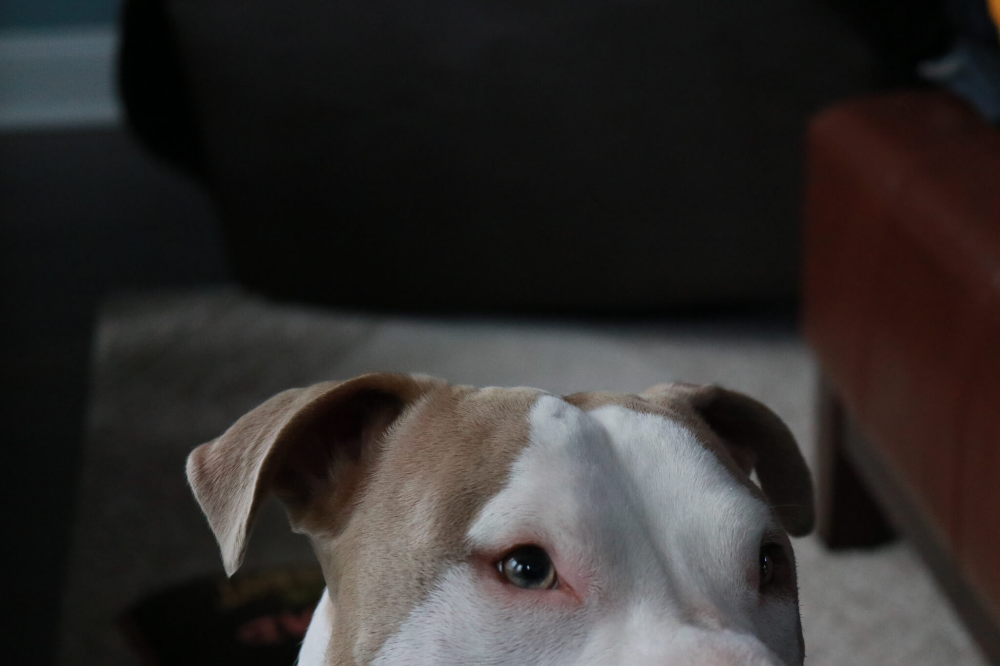

Elena Thornton
I like to write code.
Nice to meet you.
About me | My name is Elena (pronounced eh-lAy-nah), I am studying Computer Science in Atlanta, Georgia, and I want to be a software developer. My experience so far is limited so I'm looking for opportunities where I can find my passion within the realm of technology and earn real world experience.
Currently
Georgia State University Class of 2022 | I am in pursuit of a B.S in Computer Science.
Relevant Courses include Computer Science Principles I/II, Theoretical Foundations of Computer Science, Calculus I/II, Physics I/II.
Supplemental Instruction Leader | At Georgia State University, I work as an SI Leader. Every week I plan and facilitate three study sessions for students who need a little help in Calculus I.
Affiliated Groups | Girls++, PantherHackers - Webmaster, Latin American Student Association
What I can do
Skills | I've gotten familiar with a number of languages and platforms either in the classroom or by teaching myself.
You can check out the rest of my resume here:
What I've done
Projects | Here's a list of projects I've worked on as well as those I am currently working on. (reverse chronological order)
In Progress
PantherHackers
Website - 2019
In my spare time I serve as webmaster for PantherHackers, one of the computer science organizations at Georgia State. I am in the process of creating a new website for the organization and hope to create something fresh and informative for our members.
{kind=link}
Unnamed Project
Personal Project - 2019
In an attempt to make life at home a little easier, I am working on making a bot that checks the status of our garage doors and sends an alert to the household if it has been left open at night. I plan to use a Raspberry Pi, a magnetic switch, and Python.
My dad has complained to me about how our new garage door opener is advanced enough to have an app that lets us see the status of our garage doors and even open or close them remotely but does nothing to help us keep from leaving it open overnight. I have only just begun but I will continue to post my progress here.
Past Projects
Quantify
PantherHack 2019
Winner
This project was the brainchild of five strangers who wanted to make a product that benefits the greater Atlanta community, specifically small businesses. Quantify depicts the overall health of any given business with key metrics such as: costs of goods sold, operating expenses, current assets, long-term liabilities, total debt, cash flow, etc. My primary contribution was the creation of the webpage using CSS/HTML/Javascript.
{kind=link}
{kind=link}
Park-Alert
This project was part of a high school engineering course. Using 3D printing, a Raspberry Pi, and Python programming, I designed and created a prototype parking sensor that is capable of recognizing the status of spots in a parking lot and relays that information to a user via text or email.
In effort to eliminate a personal grievance with the parking situation at Walker, I took advantage of the capstone project for my Intro to Engineering course in my junior jear of high school. It was a super fun project and I learned a lot. This project was my first experience with Python and first time using a Raspberry Pi.
Get in touch
I'm always looking for new opportunities to grow and improve my skills as a developer. Like every other member of Generation Z, I'm attached to my phone so there's no bad way to reach me. I hope to hear from you soon!
Thanks for
checking out
my site!
© Elena Thornton. All rights reserved. Design: HTML5 UP.